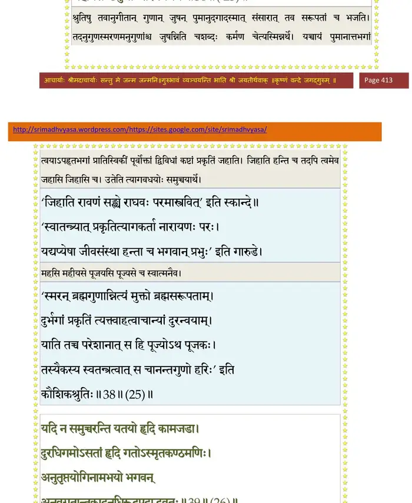

स्कन्ध 10 · अध्याय 2
श्लोक १
श्रीशुक उवाच–
सुहृद्वधान्निववृते कंसस्तद्वाक्यसारवित् ।
वसुदेवोऽपि तं प्रीतः प्रशस्य प्राविशद् गृहम् ।। १ ।।
सुहृद्वधान्निववृते कंसस्तद्वाक्यसारवित् ।
वसुदेवोऽपि तं प्रीतः प्रशस्य प्राविशद् गृहम् ।। १ ।।
श्लोक २
अथ काल उपावृत्ते देवकी सर्वदेवता ।
पुत्रान् प्रसुषुवे चाष्टौ कन्यां चैवानुवत्सरम् ।। २ ।।
पुत्रान् प्रसुषुवे चाष्टौ कन्यां चैवानुवत्सरम् ।। २ ।।
श्लोक ३
कीर्तिमन्तं प्रथमजं कंसायानकदुन्दुभिः ।
अर्पयामास कृच्छ्रेण सोऽनृतादतिविह्वलः ।। ३ ।।
अर्पयामास कृच्छ्रेण सोऽनृतादतिविह्वलः ।। ३ ।।
श्लोक ४
किं दुस्सहं नु साधूनां विदुषां किमपेक्षितम् ।
किमकार्यं कदर्याणां दुस्त्यजं किम् ऋतात्मनाम् ।। ४ ।।
किमकार्यं कदर्याणां दुस्त्यजं किम् ऋतात्मनाम् ।। ४ ।।
श्लोक ५
दृष्ट्वा समत्वं तच्छौरेः सत्ये चैव व्यवस्थितिम् ।
कंसस्तुष्टमना राजन् प्रहसन्निदमब्रवीत् ।। ५ ।।
कंसस्तुष्टमना राजन् प्रहसन्निदमब्रवीत् ।। ५ ।।
श्लोक ६
प्रतियातु कुमारोऽयं न ह्यस्मादस्ति मे भयम् ।
अष्टमाद् युवयोः पुत्रान्मृत्युर्मे विहितः किल ।। ६ ।।
अष्टमाद् युवयोः पुत्रान्मृत्युर्मे विहितः किल ।। ६ ।।
श्लोक ७
तथेति सुतमादाय ययावानकदुन्दुभिः ।
नाभ्यनन्दत तद्वाक्यमसतोऽविजितात्मनः ।। ७ ।।
नाभ्यनन्दत तद्वाक्यमसतोऽविजितात्मनः ।। ७ ।।
श्लोक ८
नन्दाद्या ये व्रजे गोपा याश्चामीषां च योषितः ।
वृष्णयो वसुदेवाद्या देवक्याद्या यदुस्त्रियः ।
सर्वे वै देवताप्राया उभयोरपि भारत ।। ८ ।।
वृष्णयो वसुदेवाद्या देवक्याद्या यदुस्त्रियः ।
सर्वे वै देवताप्राया उभयोरपि भारत ।। ८ ।।
श्लोक ९
ज्ञातयो बन्धुसुहृदो ये च कंसमनुव्रताः ।
असुराः सर्व एवैते लोकोपद्रवकारिणः ।। ९ ।।
असुराः सर्व एवैते लोकोपद्रवकारिणः ।। ९ ।।
श्लोक १०
गतेऽथ वसुदेवे तु देवकार्यार्थमुद्यतः ।
एतत् कंसाय भगवान्शंसयामास नारदः ।। १० ।।
एतत् कंसाय भगवान्शंसयामास नारदः ।। १० ।।
श्लोक ११
भूमेर्भारावतीर्णानां दैत्यानां च वधोद्यमम् ।। ११ ।।
भागवततात्पर्यनिर्णय

श्लोक १२
ऋषेर्विनिर्गमे कंसो यदून् मत्वा सुरानिति ।
देवक्या गर्भसम्भूतं विष्णुं च स्ववधं प्रति ।। १२ ।।
देवक्या गर्भसम्भूतं विष्णुं च स्ववधं प्रति ।। १२ ।।
श्लोक १३
देवकीं वसुदेवं च निगृह्य निगडैर्गृहे ।
जातं जातमहन् पुत्रं तयोरजनशङ्कया ।। १३ ।।
जातं जातमहन् पुत्रं तयोरजनशङ्कया ।। १३ ।।
श्लोक १४
मातरं पितरं भ्रातॄन् सर्वांश्च सुहृदः सखीन् ।
निघ्नन्त्यसुतृपो लुब्धा राजानः प्रायशो भुवि ।। १४ ।।
निघ्नन्त्यसुतृपो लुब्धा राजानः प्रायशो भुवि ।। १४ ।।
श्लोक १५
आत्मानमिह सञ्जातं जानन् प्राग् विष्णुना हतम् ।
महासुरं कालनेमिं यदुभिः स व्यरुध्यत ।। १५ ।।
महासुरं कालनेमिं यदुभिः स व्यरुध्यत ।। १५ ।।
श्लोक १६
उग्रसेनं च पितरं यदुभोजान्धकाधिपम् ।
स्वयं निगृह्य बुभुजे शूरसेनान् महाबलः ।। १६ ।।
स्वयं निगृह्य बुभुजे शूरसेनान् महाबलः ।। १६ ।।
।। इति श्रीमद्भागवते दशमस्कन्धे द्वितीयोऽध्यायः ।।